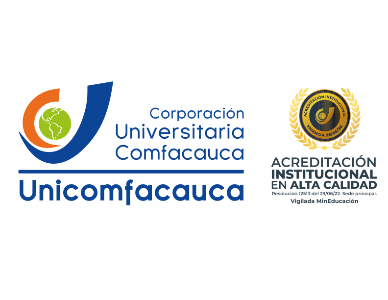
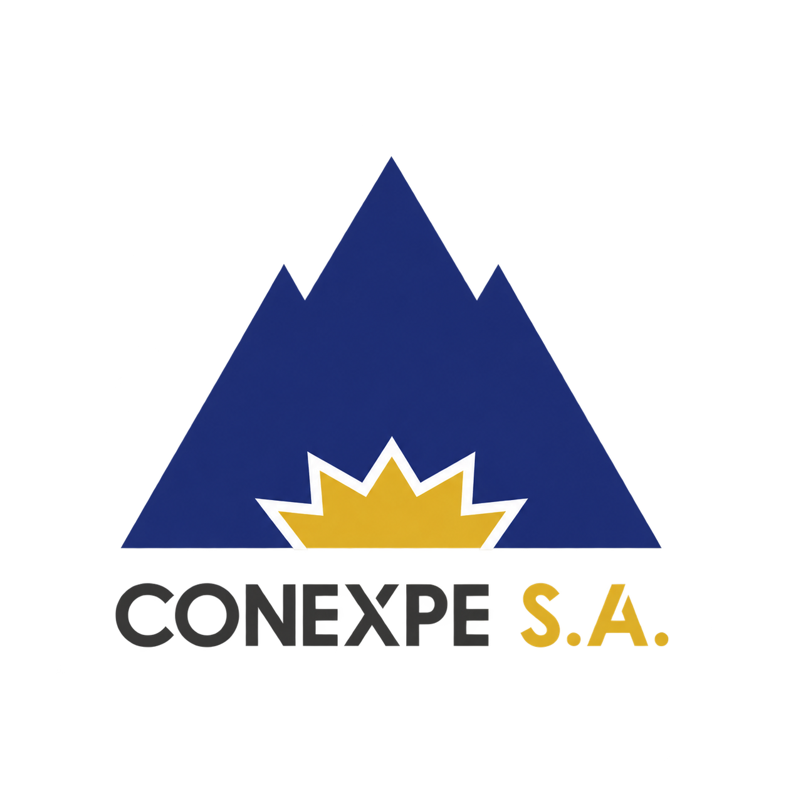

Unicomfacauca
Capacitación práctica · Material de apoyo
Claude en la empresa
Casos de uso y soluciones para CONEXPE S.A.
Docente responsable
Ing. Julio Ricardo Martínez Montezuma
Unicomfacauca · Popayán
Jueves 1 de octubre de 2026 · 7:00–10:00 a. m.
Extrae el ZIP antes de comenzar. Encontrarás las carpetas Entradas y Salidas para realizar las prácticas.
Agenda de la capacitación
Seis temas con prácticas cortas: partimos de una necesidad, comprendemos la herramienta y comprobamos el producto obtenido.
| Hora | Tema | Producto o propósito |
|---|---|---|
| 7:00–7:25 | Ingeniería de Prompts | Solicitudes claras con CTLF |
| 7:25–7:45 | Manejo de Proyectos | Asistente IA como orientador |
| 7:45–8:10 | Artefactos | Dashboard de marcaciones |
| 8:10–8:20 | Pausa | |
| 8:20–8:45 | Habilidades — Skills | Procedimiento reutilizable de revisión |
| 8:45–9:15 | Trabajo con Office | Agenda editable en Word |
| 9:15–9:50 | MCP en Claude Desktop | Lectura local y borradores del evento |
| 9:50–10:00 | Cierre | Aplicaciones en CONEXPE y evaluación |